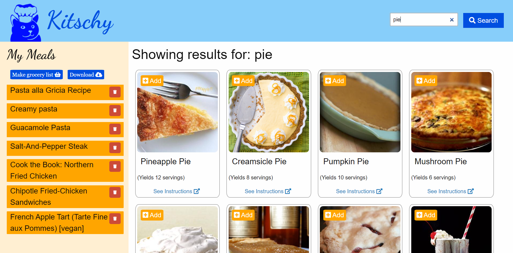
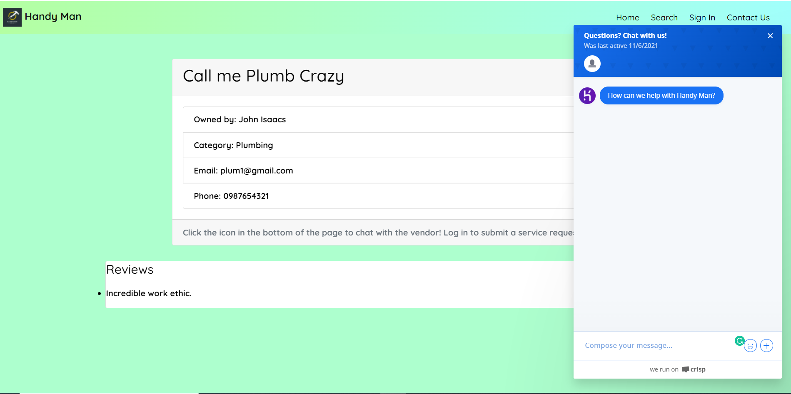
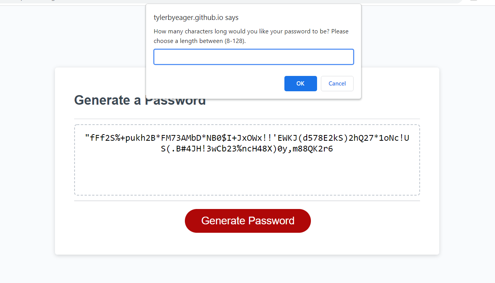

Some of my Work
Here are a few example of the work that I have done so far. Future projects that I have in mind look towards E-commerce and the stock exchange/crypto currencies
as they are finding themselves in a much more mainstream light nowadays.
Kitschy: Your Kitchen Helper App
Kitschy began with the singular purpose of making shopping/meal-prepping
a much easier experience for our users. The idea is that a user can search thousands of recipes, add their favorites, and, with a click of a button, generate a shopping list that combines
all like ingredients between the recipes into a singular amount. Instead of having to worry about if one recipe needs two pounds of chicken and another needing six, Kitschy can tell our users
the grand total amount they will need to get at the store in order to create each and every one of their saved meals. In addition, we were able to use Google Firebase to create a cloud sharing
feature that will allow users to share shopping lists between friends, family members, roommates, or whomever else might want to use it.

Handy Man App
Handy Man was an idea that struck me when I had ordered food through an app. I realized that there existed many apps for ordering food when we're hungry or a ride when we need to get to/from somewhere.
However, nothing existed to handle spur of the moment home repairs and with the holidays fast approaching, that might be very benficial to have. We've all been in a position where some major home repair was needed
ASAP but then we've had to research online for countless hours, search through conflicting reviews, and make a million calls that go unanswered just for us to go with whoever became available first. Handy Man
was a way for users to look up a skilled tradesman, or "vendor", by category, see a list of those who have entered into our database, see reviews, and instantly chat with the vendor in order to discuss the repair/project,
negotiate price, and set up a day-of start time. The idea was a sort of "Doordash" but for skilled labor. This is a full stack app that showcases all these functions with intention to add gps tracking and monetary exchange
in the future. The list of vendors is prepopulated now but a fully developed app would have vendors paying to join our database thereby exposing them to more business.

Weather Dashboard
This project is pretty simple in function and design. I wanted to practice using the Bootstrap css framework and so I used this project as an excuse to do exactly that. I'll be the first to admit,
it isn't a visually appealing app. However, the work that went into figuring out how to get the information I needed from two api calls and then dynamically displaying that information to a user was such a fun challenge.
I fully intend to revist this project in the future and improve upon the design.

Password Generator
A functioning password generator. This project ended up teaching me about Math.Floor and Math.Random
which proved a great resource in randomly generating letters and symbols. I've since used this knowledge on other projects.